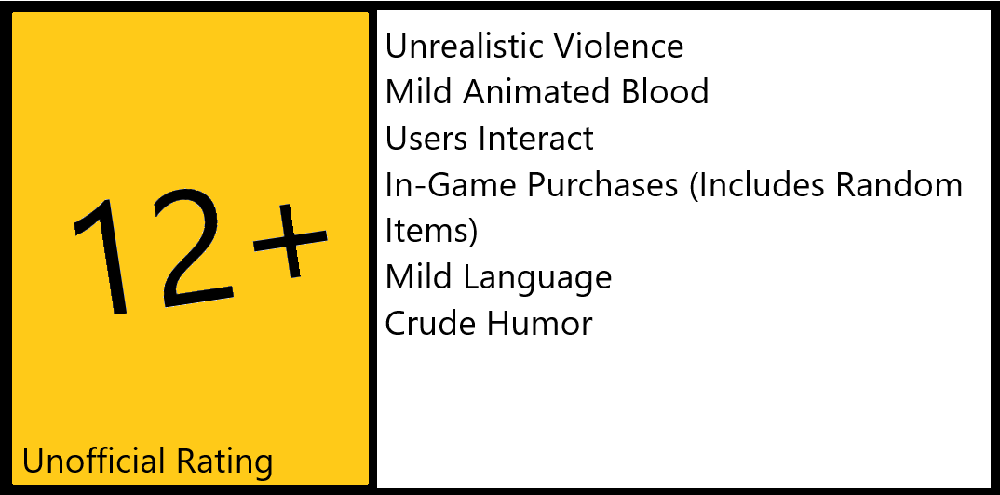

TDWB is a top-down .io-style hero shooter. TDWB is currently in the Beta phase, with playable gameplay, but bugs and unfinished content. Designed for simplicity, TDWB is designed to be easy to learn and hard to master. Play TDWB with your keyboard and mouse, or a game controller.
Play NowTDWB is an online multiplayer game. You can invite your friends to play along with you, find others online, and even create private matches! The ranking system only takes into effect the number of kills you get before you die. If you don't get kills, your rank decreases. The more kills you get, the more your rank increases.
